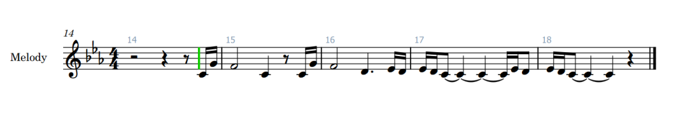

Started this jam pretty much the same way I do every time, meaning I started noodling/improvising ideas with piano while looking at the theme prompts.
I pretty quickly got a little melodic figure that I liked and then improvised a sketch playing around with it, intending to take a break after that and continuing forward from the sketch.

Ended up getting a bit side-tracked by the Anniversary update to Half Life 2, so didn’t work on the jam for the rest of the day.
Didn’t get any arrangement/instrumentation ideas for yesterdays piano sketch so I decided to start sketching a new track instead.
Played around on the piano a bit and after a while I came up with this sort of “celtic” dance idea that I felt might be a bit too off theme for the jam, but I had decided to just go with whatever ideas I get since the jam is an “imagination” jam after all (usually I keep scrapping ideas until I get something that I feel fits the theme 😅)
For the arrangement I started out with testing how the melody sounded played by Violins, and I felt they worked great!
If I had the patience and skill working with samples, I’d really like for the melody have some gliding/portamenti at parts to amp the dance feel of the lead lines.
The rest of the arrangement was pretty much just simple stuff to support the lead line, with a pedal bass played by Cellos and Bassoons keeping the pulse going, while the percussion gives the overall groove to the thing.
I recorded some claps and “shakers” myself to give a bit more organic feel to the percussion, I also thought about recording some vocal chanting stuff too, but decided to put the idea on hold for now and use some children’s choir sound the reiterate the melody near the end.
Lastly I added a little backing line to the second part of the track using a Pipa (Chinese Lute) and a Irish Low Whistle, but as of writing this text the next day, I feel that the Irish Whistle isn’t really audible enough because of its range, so I might just cut it out completely or use a higher whistle instead.
At this stage I felt the track had a pretty good amount of things going on, so the next step would probably be to think if the track is too short or not with its 1 minute runtime (I will probably keep it short, just to make rating easier/faster for people).
Started a new track today as well since I felt that the day 2 track was in a pretty good state, and I didn’t get any more ideas to it.
Every idea I came up with today seemed to be really folky like my previous tracks, so I just went with the flow and started to work on the idea I liked the most.
I improvised/sketched the ideas on a piano, but threw the midi on a nylon guitar sound to use as the base of this track for now. Intending to maybe change it to something else or re record it later to be more idiomatic for the instrument (which I probably wont, since I’m pretty lazy on those sort of things😅)
Since the idea itself was pretty folky, I decided to go with a pretty minimalistic arrangement for this, especially since the previous track is pretty energetic.
The arrangement I ended up with consisted of just the guitar, some shaker, tambourine and whistling doubling the melody. After I finished working on the track for now and went to upload the current state to YouTube, as I was thinking of a name for the track, I came up with the name “The Roads Not Taken” and while googling the word I came across a poem called The Road Not Taken by Robert Frost, which gave me the idea of using a poem as lyrics for the track, making the track feel like something people sang while traveling the roads. The whole idea is sort of what I initially tried to do for the previous Ambience Jam, so might be fun to try it this time.
Didn’t work on the jam today, mostly just played around on the piano.
Like yesterday, didn’t work on the jam today but managed to finish my playthrough of Half Life 2 (just the base game, will play episodes after the jam).
Back to actually working on the jam after a slight side quest with HL2 😅.
Played around on the piano a bit and came up with an idea for some sort of a combat track, that I will try to arrange tomorrow.
Before starting to work on the jam today I had listened to some old jrpg soundtracks, and that made me really want to use some retro/snessy sounds.
I know all my tracks since now have been done with modern sounds, but I just really felt like using SNES sounds and as I mentioned before, I intended to go with the flow this jam and just do what I feel like doing as the feelings come😁.
After making an arrangement of the piano sketch using SNES sounds, I really liked the feel of the sounds. I’m thinking about just switching all the previous tracks to SNES sounds too (I don’t have SNES samples of some of the instruments I’ve used, like the Pipa, but I guess I could make the sounds myself by resampling it?)
Was feeling pretty unmotivated/lost on any new ideas today, but while i was playing World Of Warcraft before heading off to bed, I suddenly got the urge to try and do some ambient orchestral stuff like they have in wow.
Got the basic idea pretty quick after i started, and managed to make this before ending for the day.
No work on the jam today.
Tried to continue working on my previous tracks, but felt really unmotivated today too.
Tried to get some motivation going by taking my combat sketch and changing the sounds to a string quartet setup, which helped a bit to get some ideas/changes to it, but it’s still pretty barebones and short.
Seems I got really stuck on all of my tracks after the initial day of working on them and couldn’t muster up the motivation to continue them any further, so all of the tracks except the main theme piano tune “The Far Reaches”, are really short just over a minute long.
I was bit second guessing if I want to submit these at all since they are pretty short and unfinished to me, but in the end decided to submit them.
Hopefully on the next Impressions Jam I’ll be more productive 😅🤞